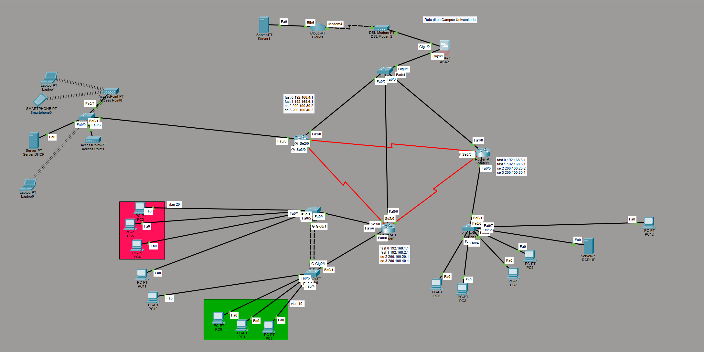
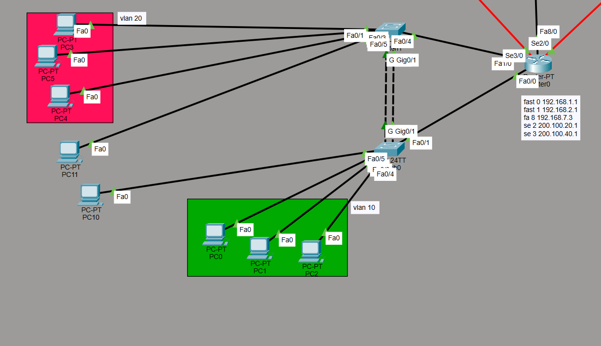
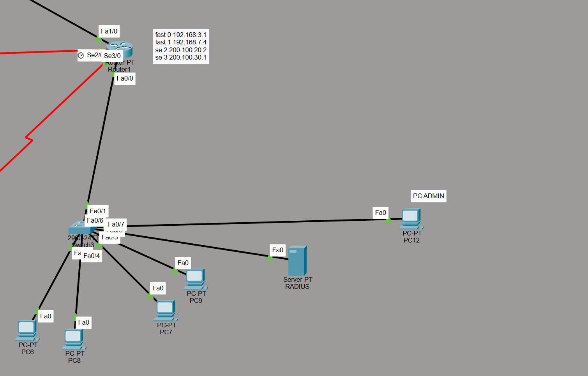
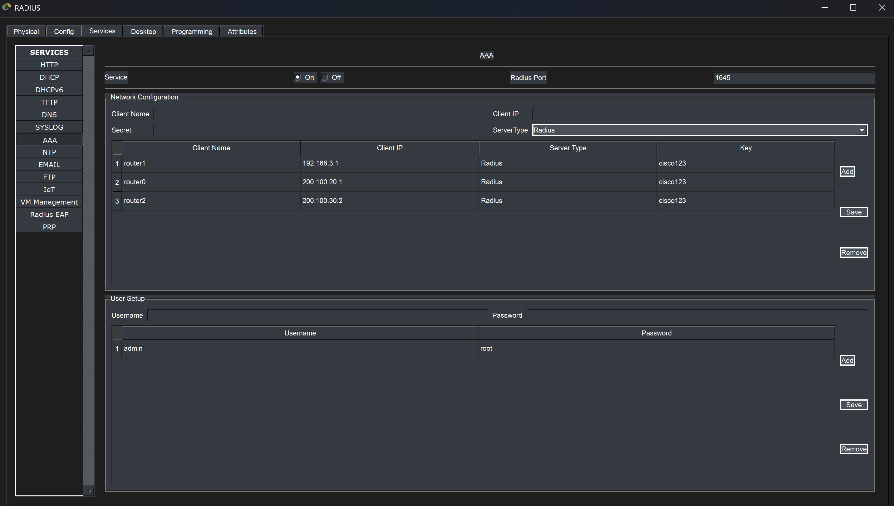
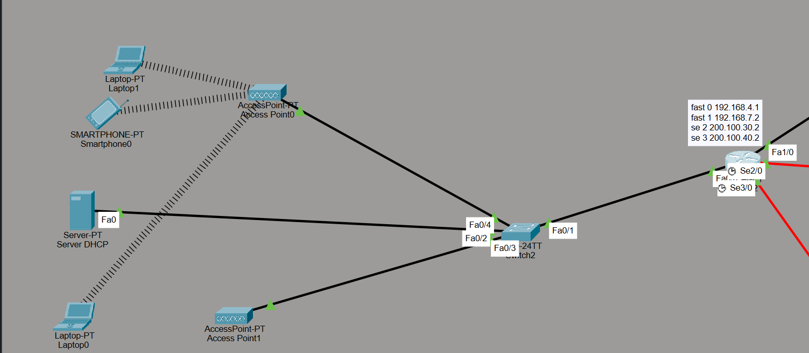
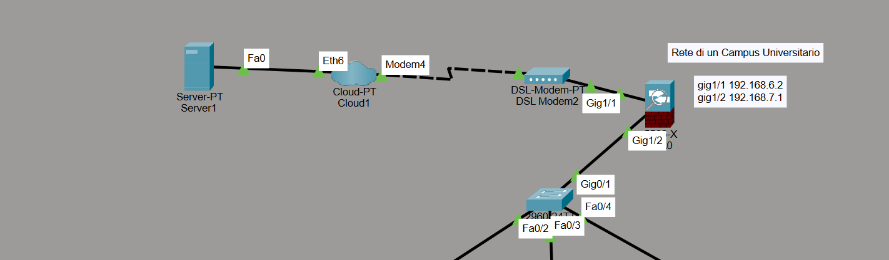
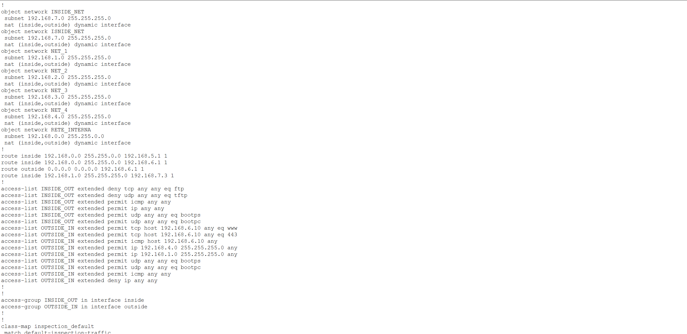

Rete Campus.


01. Infrastruttura Core Ovest
Il Router 0 rappresenta il pilastro fondamentale per la gestione del traffico della zona Ovest del Campus. La sua configurazione è stata progettata per garantire la massima efficienza nell'instradamento dei pacchetti tra le sottoreti locali e la dorsale principale.
Oltre alla semplice funzione di routing, questo dispositivo agisce come primo baluardo per la segmentazione del traffico. Grazie all'implementazione di VLAN (Virtual Local Area Network), è possibile isolare logicamente i domini di broadcast, migliorando sensibilmente la sicurezza e riducendo la congestione causata dal traffico non necessario.
- Gerarchia degli Indirizzi: Assegnazione statica e dinamica per le reti 192.168.1.x e 192.168.2.x, garantendo che ogni dipartimento abbia un proprio range dedicato e monitorabile.
- Ridondanza Seriale: L'uso di link Seriali (Se2/0 e Se3/0) permette una comunicazione punto-punto resiliente verso le altre sedi, mantenendo la connettività anche in caso di guasto ai link Ethernet.
02. Sicurezza Centralizzata & AAA
Il Router 1 funge da centro nevralgico per l'integrità della rete. Qui risiede la logica di autenticazione che protegge l'accesso alle risorse critiche del campus tramite policy rigorose.
Il cuore di questa sezione è l'integrazione con il protocollo RADIUS. Attraverso il server dedicato, la rete implementa il framework AAA (Authentication, Authorization, and Accounting). Ogni tentativo di accesso deve essere verificato contro un database centrale, tracciando ogni operazione effettuata per una sicurezza di livello enterprise.
- Gestione Admin: Il PC12 (Admin) è attestato su una porta dedicata, garantendo un canale di gestione protetto per la manutenzione senza interferire con il traffico degli utenti.
- Integrità Dati: Il nodo gestisce l'interconnessione Campus (192.168.7.3) assicurando che i dati sensibili di autenticazione viaggino con priorità e protezione elevata attraverso la rete.



03. Edge Computing & Mobilità
Il Router 2 è orientato all'utente finale e alla flessibilità. In un ambiente universitario moderno, la mobilità è essenziale: questo nodo gestisce l'intera infrastruttura Wireless e l'erogazione dei servizi IP.
L'elemento tecnico distintivo qui è il DHCP Relay (IP-Helper Address). Le richieste dei client vengono inoltrate in modo intelligente a un server dedicato (192.168.4.10). Questo permette una gestione centralizzata dei log e dei rilasci (lease), semplificando drasticamente il troubleshooting e la scalabilità della rete.
- Ottimizzazione Wireless: Configurazione di Access Point per coprire aree comuni, garantendo un roaming fluido tra le diverse zone dei dipartimenti.
- Interconnessione: Utilizzo del link 192.168.7.2 per raccordarsi alla backbone centrale, bilanciando il carico di traffico generato dai dispositivi mobili.
04. Deep Packet Inspection & NAT
Sicurezza Perimetrale Avanzata
La sicurezza della rete Campus è affidata a una configurazione rigorosa del Firewall, che opera con policy di ispezione profonda. La strategia applicata si basa sul principio del "Privilegio Minimo": tutto ciò che non è esplicitamente permesso viene bloccato.
Il NAT Dinamico permette a numerosi dispositivi interni di navigare utilizzando un set limitato di IP pubblici, rendendo la struttura reale della rete invisibile dall'esterno e mitigando attacchi diretti agli host.
- Filtro Entrante: Protezione totale contro scansioni. Solo il traffico Web certificato (HTTP/HTTPS) è instradato verso il server pubblico (192.168.6.10).
- Filtro Uscita: Prevenzione della perdita di dati tramite il blocco dei protocolli FTP/TFTP, forzando l'utilizzo di canali crittografati per il trasferimento file.

